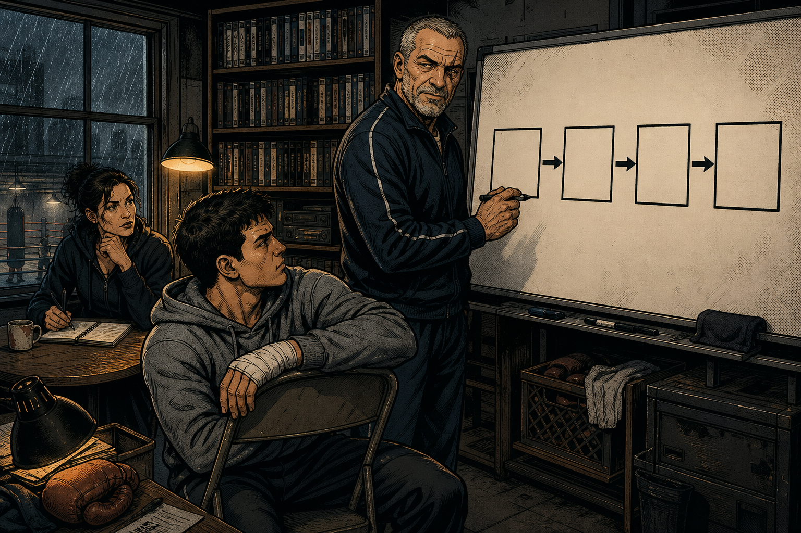
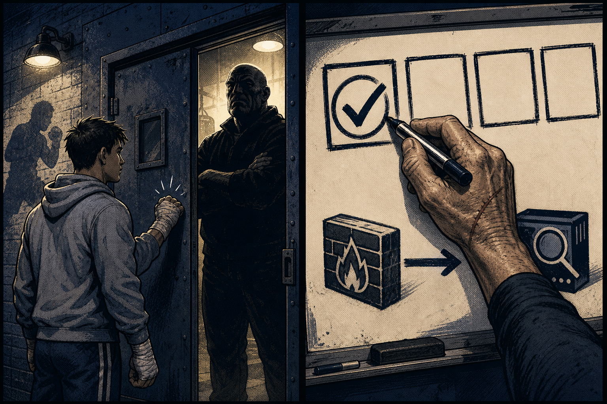
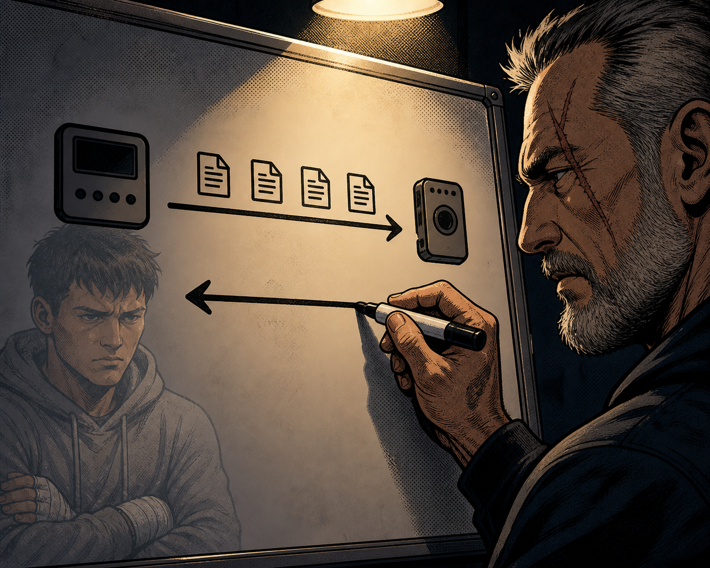
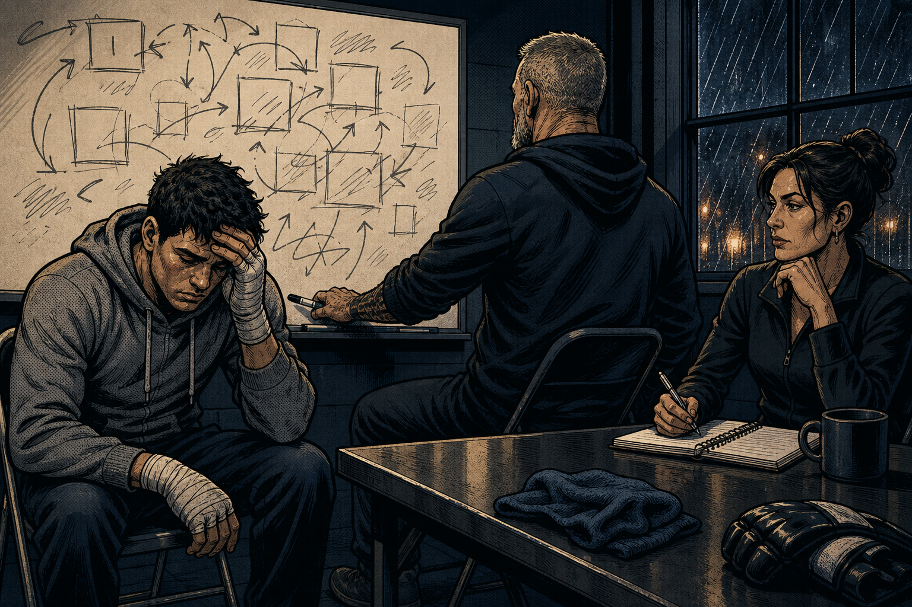
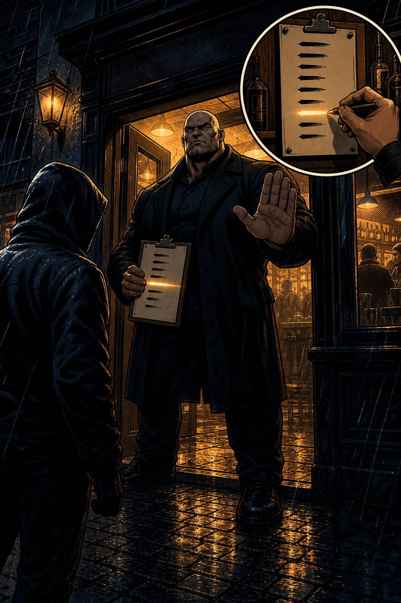
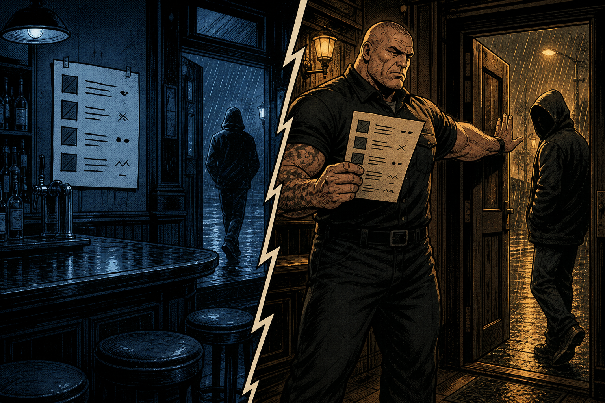
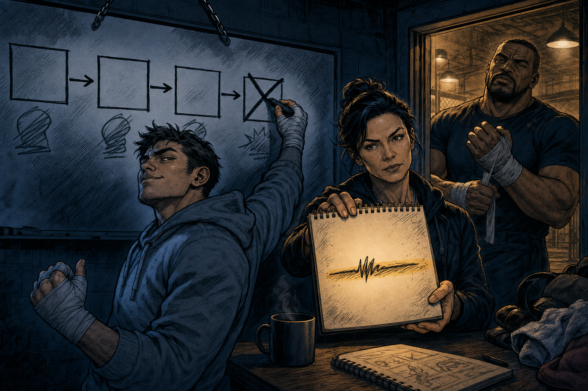
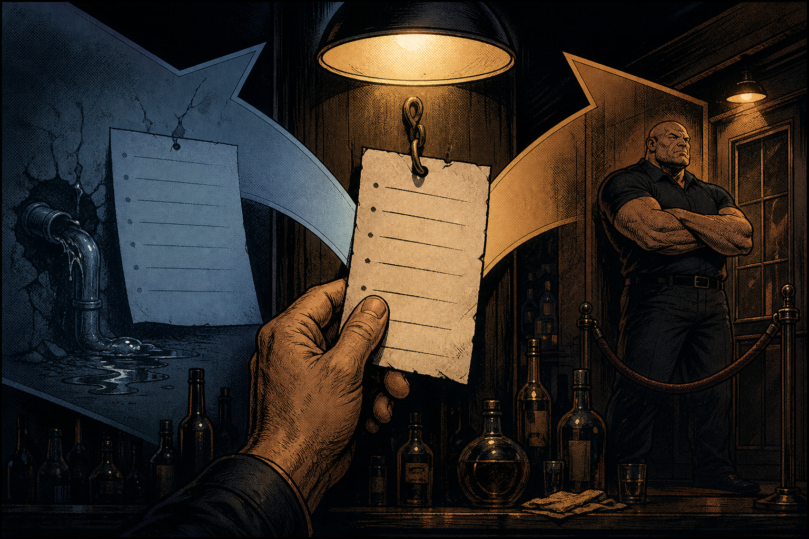
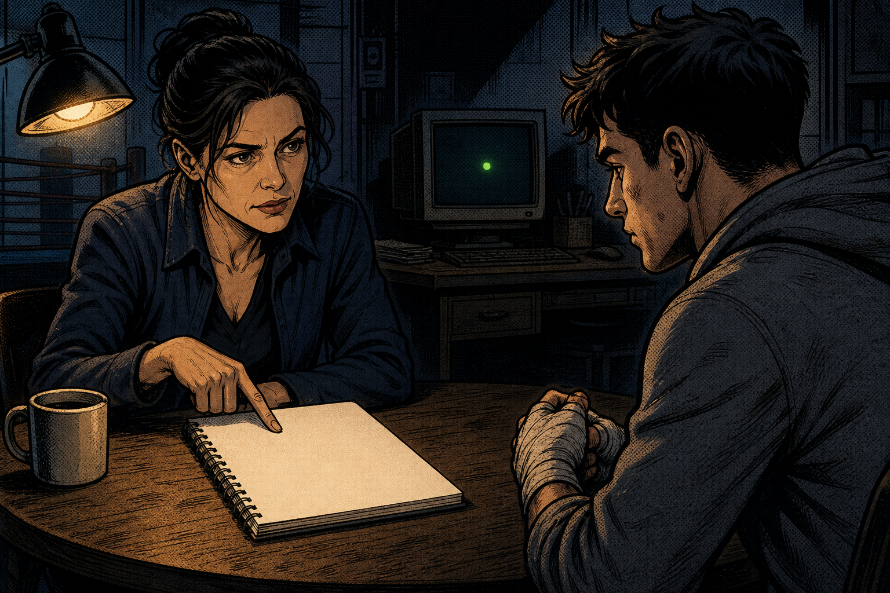
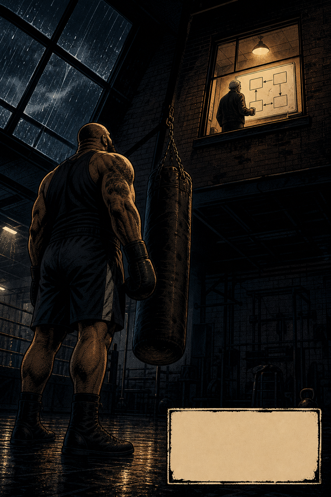

Upstairs, the office smells like burnt coffee. Doc is already at the round table with her spiral notebook. Coach stands at the east-wall whiteboard — the one that never gets erased — and he has drawn exactly four empty boxes and three arrows. No labels.


Cheapest objective on the board — and every box downstream is dead if it never happens.

Something has to come back down. Coach writes FortiMQ in box two: the messaging layer between Fabric members. Not the intelligence. Not the object. The pipe.

The honest moment of the round. Coach wipes the middle of the board — but never the arrows — and rebuilds it clean, one box at a time. Then he stops using Fortinet words entirely. He puts his coffee cup on the table.

Fabric Feed → the sheet. The container a policy points at. Contents change; the policy never gets edited.

Coach stops mid-reach for the marker. Doc looks up for the first time in a while. Somebody has to check the list. The sheet is paper until a man on the door reads it and acts on it. Box four gets its label: POLICY + PROFILE → ACTION. Two hundred points — more than the first three boxes combined.

Break-it scenario: everything configured, host reaches a destination that's definitely on the feed — traffic goes straight through. The log reads: connection allowed, policy named. Rocco crosses off Authorize... and Enforce.

Name's on the sheet → doorman problem. Intelligence arrived and the policy still let it walk: profile or action.
One look. Two categories separated. That's how you spend thirty seconds instead of ten minutes when the clock is real.

And the final challenge lands the same lesson from another angle: the dashboard shows the device connected, logs arriving, everything green. Proof of box one?
| Board | Fabric | Pub | The rule |
|---|---|---|---|
| Box 1 — Learn | Authorize on FAZ | Let in the door | The receiver holds the gate |
| Box 2 — Share | FortiMQ | Word gets around | The pipe, not the payload |
| Box 3 — Consume | Indicator / Fabric Feed | The name / the sheet | Enforce on the sheet, not the name |
| Box 4 — Enforce | Profile + Policy → Action | The doorman | Match is not action |
| Proof | Log: hit + policy + action | Barred guy turned away | Green is a light, not evidence |

Coach doesn't answer that. He picks up his coffee and turns his back to the board. He never erases it.